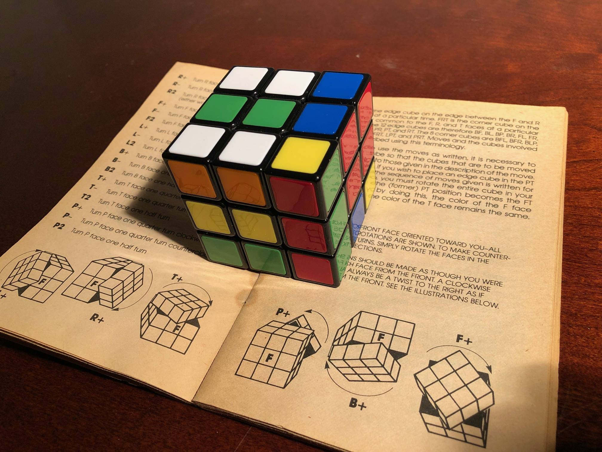

Projects
Exploring Projects: A Showcase of Innovative and Creative Endeavors
Exploring Projects: A Showcase of Innovative and Creative Endeavors
This project aims to develop a facial recognition system using MDCNN, which is a powerful deep learning technique for image recognition. The system will be designed to recognize human faces with high accuracy and efficiency, allowing for quick and reliable identification of individuals.
The system will be trained on a large dataset of facial images and will use a variety of MDCNN models to extract features from the images. These features will then be used to identify individuals based on their facial characteristics, such as the distance between their eyes, nose, and mouth, and the shape of their face.
Tech Stack Used - python, opencv2, tensorflow, MTCNN
Generating color images from grayscale sketches using GANs involves preparing a high-quality dataset of sketches and corresponding color images, and training a GAN model with a generator and discriminator. The generator outputs color images that are similar to the training dataset, while the discriminator tries to distinguish between real and generated images.
Techniques such as conditional GANs and perceptual loss help to ensure realistic colorization and consistency with the sketch. This process has many potential applications in art, design, and architecture. As GANs evolve, we can expect to see even more advanced techniques for generating high-quality color images from sketches in the future.
Tech Stack Used - Python, Keras, TensorFlow, pandas, NumPy.
Remote keylogging is a type of software designed to track and record the keystrokes typed on a computer keyboard from a remote location. Keylogging systems can be used for various purposes, such as monitoring employee productivity, tracking online activity of minors, or conducting digital forensic investigations.
A remote keylogger typically operates by recording the keystrokes typed on a computer keyboard and transmitting the data to a remote server or email address. The data captured by the keylogger may include usernames, passwords, credit card numbers, and other sensitive information. The software may also include additional features such as capturing screenshots, logging internet browsing activity, and recording chat conversations. While remote keyloggers can be used for legitimate purposes, they can also pose a significant risk to privacy and security if used maliciously or without the consent of the computer owner.
Tech Stack Used - python, socket programming

Solving a Rubik's Cube using C++ involves developing an algorithm that can manipulate the cube's sides and positions to solve the puzzle. One of the most popular algorithms for solving the Rubik's Cube is the CFOP method, which involves solving the cube layer by layer.
To implement this algorithm in C++, we would start by representing the cube as a multidimensional array. Each face of the cube would be a two-dimensional array with colors representing the individual cubelets. We can then develop a series of functions that manipulate the cube's positions and orientations, such as rotating a face, turning a row or column, and so on. By combining these functions with an appropriate strategy, such as CFOP, we can solve the Rubik's Cube using C++.
Tech Stack Used - C++